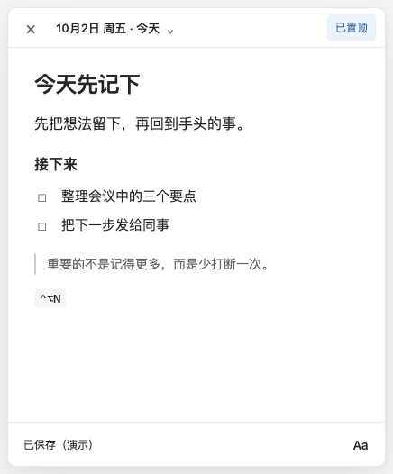
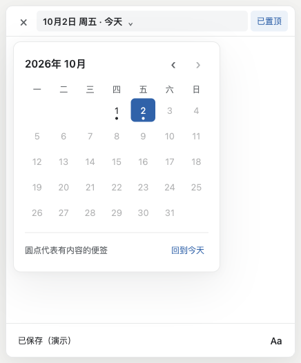
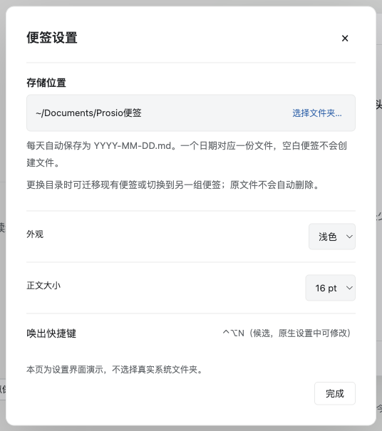

01 · 每日便签

正文优先。每天只有一个日期文件，不再选择文件名或单张保存位置。
日期放在标题栏，存储目录放在设置。看过去的记录，也能一键回到今天。

正文优先。每天只有一个日期文件，不再选择文件名或单张保存位置。

点击日期展开，圆点表示有内容。历史日期可编辑，「回到今天」始终可达。

统一选择文件夹，每天自动保存为日期.md；取消选择不会丢掉草稿。
YYYY-MM-DD.md 文件。本版建议未来日期不可选；历史日期可继续编辑。原型固定以2026年10月2日演示，实际应用的今天按系统本地日期。